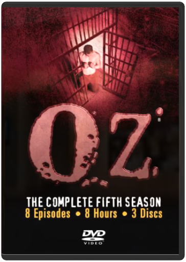
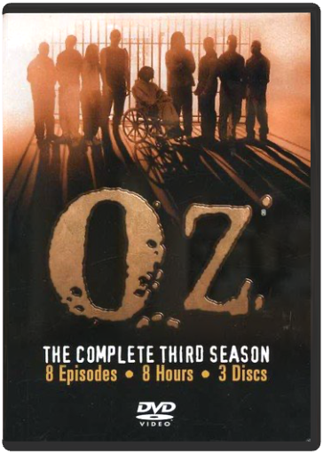
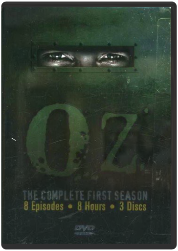
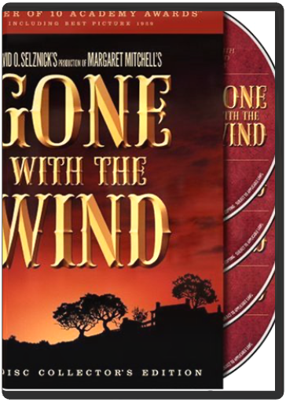
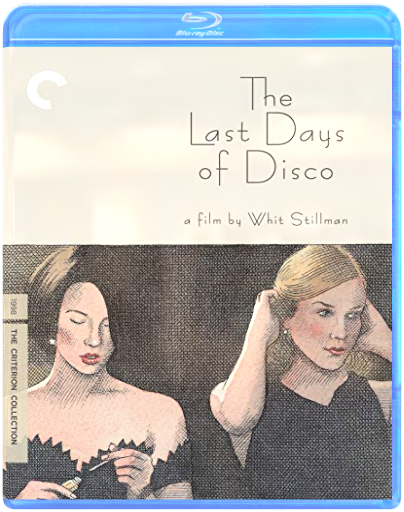

Movies
Film Collection
Blu-Ray Collection
DVD Collection
TV Collection
1
2
3
4

Oz: Season 5
Oz: Season 4

Oz: Season 3
Oz: Season 2

Oz: Season 1
The Apprentice - The Complete First Season
Moral Orel, Vol. 1, The Unholy Edition
Various

Gone with the Wind
Victor Fleming, Sam Wood, George Cukor
Gone with the Wind
Victor Fleming
30 Rock - The Complete Series
various
Metropolitan
Whit Stillman

The Last Days of Disco
Whit Stillman
1
2
3
4

 Made with Delicious Library
Made with Delicious Library